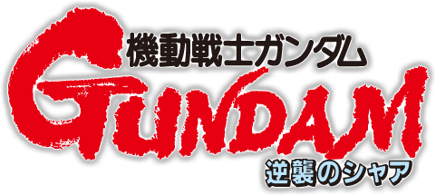
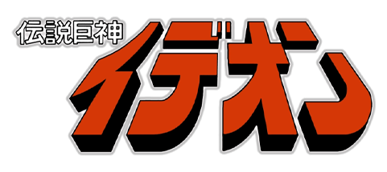
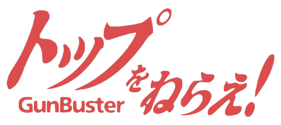
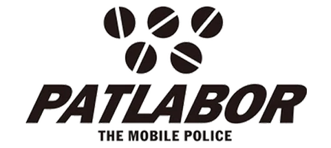
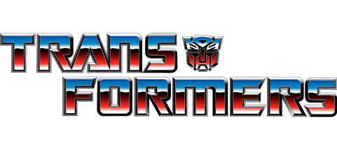
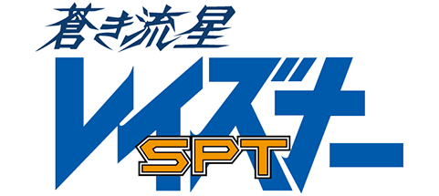
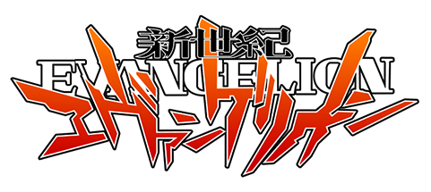

NU GUNDAM


The NU Gundam is from a film called "Mobile Suit Gundam: Char's Counterattack" and was designed by the incredible Yutaka Izubuchi. The color design is extremely simple yet very cool and sleek. It's a very powerful suit, but overall the whole design is so elegant to me. I especially love the fin funnels at the back of the suit, they add a unique look to this one.
View Nu Gundam GallerySCOPEDOG

The Scopedog is from an anime series by the name of "Armored Trooper VOTOMS" and is designed by industry legend Kunio Okawara. This is a very small yet very powerful design in terms of looks. The color scheme is extremely simple, yet the bulkiness and face feel so intimidating to me. I especially love when the Scopedog has a Red Shoulder, it just somehow makes the design a billion times cooler to me.
View Scopedog GalleryIDEON


The Ideon is from the anime series "Space Runaway Ideon" and was designed by Yuichi Higuchi. This is a very unusual design, but it's one that I can't help but love. Very simple color scheme, but the overall design just feels alien yet intimidating. Red is also my favorite color, so this is kind of a deal breaker for me. It's fire truck looking design can be very goofy to people, but it's one that has only gotten more cool to me over time.
View Ideon GalleryGUNBUSTER


The Gunbuster is from the OVA series "Aim for the Top! Gunbuster," and was designed by Kazutaka Miyatake. It's massive, bulky, but insanely cool. Out of all the mechs on this list thus far, this one has the coolest color scheme and ESPECIALLY the face. I adore it. It's just effortlessly cool just by existing, and that's as much as I can say without going into what cool stuff it does in the series.
View Gunbuster GalleryAV-X0 TYPE ZERO


The AV-X0 Type Zero is from the film "Patlabor: The Movie," and was designed by Yutaka Izubuchi. It's quite sleek in its design, with a really simple color scheme. Compared to the regular Ingram units, this one just has a really cool and intimidating look to it. The face esepcially just screams badass to me. While this doesn't have much to do with the design itself, I love how it becomes such an intimidating force due to its operating system causing the unit to go berserk.
View Type Zero GalleryOPTIMUS PRIME


Optimus Prime originated from the Transformers franchise, and was designed by a ton of people over the years. The toy was designed by Shōji Kawamori of Macross fame, and the animated design was done by Floro Dery. Outside of how much the character means to me personally, there's something about the original Optimus Prime design that just speaks to me. I love the colors. The red, white, and blue are just really nice looking, and his truck form is just as cool. In all of the different designs, I love his G1 design the most, and I think that design looks the best in the 1986 Movie.
View Optimus Prime GallerySPT LAYZNER


This is one of those designs that took a long while to grow on me. The head looked super weird to me at first, but I really warmed up to me. It has a sort of "alien" feel to it which was obviously the intent, and like the other characters in the show, I learned to appreciate what appeared unknown and foreign to me. Outside of that I love the color scheme and especially the shoulders and legs. They have a bulkiness to it but really works well with the other colors for its design. I adore it.
View SPT Layzner GalleryEVANGELION UNIT 01


Evangelion Unit 01 is from the anime series "Neon Genesis Evangelion" and was designed by Ikuto Yamashita. When I first saw this design, I was kind of conflicted. Purple isn't really a color I like a ton, and I didn't really think the colors worked all that much together... but I quickly grew to love this design. The sleek shape, the shoulders, and that incredible looking face. Everything about it is perfect, and out of the three man units in the series, this one stands as my absolute favorite.
View EVANGELION UNIT 01 Gallery